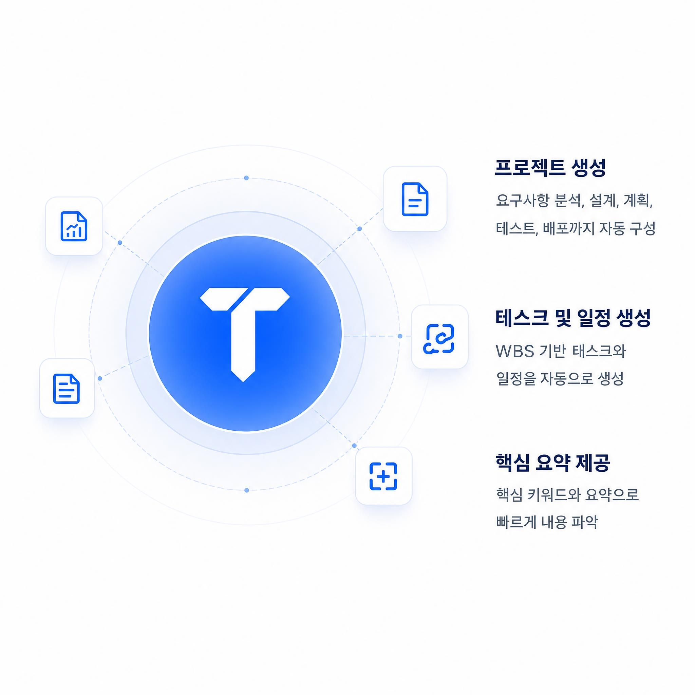

다양한 형식의 문서를 높은 정확도로 인식
DOCUMENT INTELLIGENCE WORKSPACE
흩어진 문서를
실행 가능한 프로젝트로
AI가 문서의 핵심을 분석하고,
프로젝트와 태스크로 전환해 실행까지 지원합니다.
원문 근거 연결프로젝트별 권한검토 이력 기록

원문 근거 연결
OCR 결과 직접 검수
프로젝트별 팀 권한
검토 이력 기록
Tasqra의 핵심 기능
핵심 내용과 요구사항을 자동으로 추출
분석 결과로 프로젝트와 태스크 구성
진행 상황을 한눈에 확인하고 협업
ONE CONNECTED WORKFLOW
문서를 읽는 순간부터 실행까지,
하나의 흐름으로 연결합니다.
OCR 검수부터 AI 분석, 태스크 관리와 산출물 생성까지 끊김 없이 이어집니다.
문서를 정확하게 읽고
PDF, 이미지, DOCX, HWPX 문서의 텍스트를 추출하고 원문과 나란히 검수합니다.
핵심을 구조화하고
AI 분석 결과에서 핵심 요약, 요구사항, 금액과 일정을 프로젝트 정보로 정리합니다.
실행까지 연결합니다
승인된 항목을 태스크로 관리하고 검토 결과를 다양한 형식의 산출물로 만듭니다.